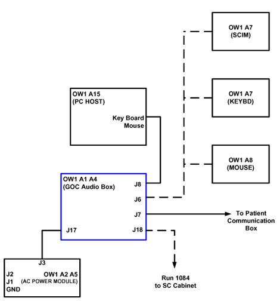

Operating Documentation
Direction 5133330-3, Rev# 14
Signa EXCITE HD 3.0T Service Methods
Module Version 1.0, Version Date 5/3/07
Operating Documentation |
This GOC is equipped with a GOC-AA, which replaces the WIM. The cabling is different with this configuration, there are 2 changes.
In the original configuration, Cable run 1084 ran between the System’s cabinet and the GOC, and connected to a cable that was located in the bottom of the GOC cabinet. This cable, run 1085 now connects to the GOC-AA, connector J18.
The cables going to the Keyboard and the mouse now connect to the cable that runs between the GOC-AA and the SCIM. In the past the cables would connect to the SCIM.
See Illustration 1.
Illustration 1: GOC Cable Map (The dashed lines indicate new cabling)
